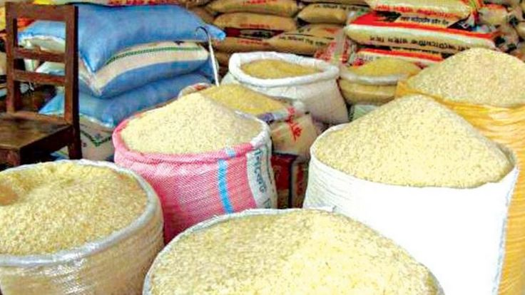

Maïs
Maïs jaune cultivé localement.
Voir plusDécouvrez quelques-uns de nos produits agricoles de qualité, issus d'une agriculture responsable et locale.
Maïs jaune cultivé localement.
Voir plusManioc frais de grande qualité.
Voir plus
Ananas naturellement sucrés.
Voir plus
Farine transformée localement.
Voir plus
Gari traditionnel togolais.
Voir plus
Jus naturel sans conservateur.
Voir plus